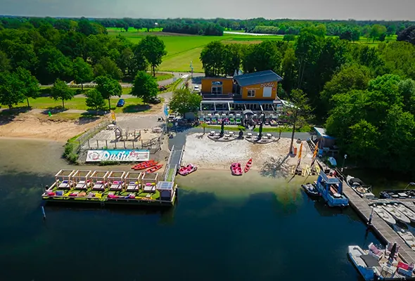
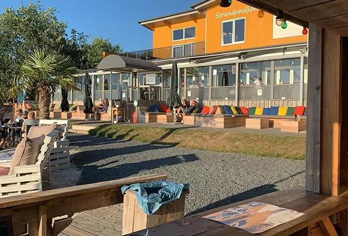
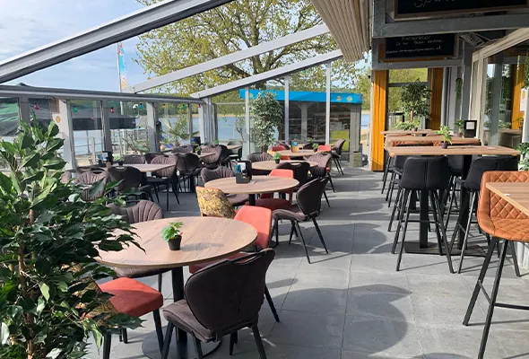
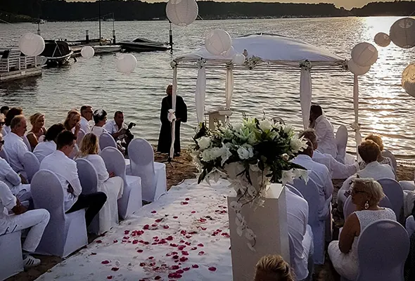

Water-hotspot buiten Nijmegen? Ontdek Dushi!
Gepubliceerd op 17 oktober 2022, bijgewerkt op 20 februari 2024

Het originele en diverse bedrijf Dushi 2.0 is al een tijdje bezig bij recreatiegebied Mookerplas. Ze bieden veel verschillende arrangementen aan. Veel zijn interactief waardoor deze plek perfect is voor alle leeftijden. De ouderen kunnen na een lange fietstocht lekker eten en drinken bij het terras, de kinderen kunnen lekker in het water of op het kleine strand lekker rondrennen en spelen met zand. Het strandpaviljoen bevindt zich ten zuiden van Nijmegen en ligt in de top van Noord-Limburg. Met een prachtig uitzicht op het water is het terras ook een grote liefhebber bij de klanten.
Bootje huren of chillen in de VIP Lounge?
Je kan hier een bootje huren waarmee je het water op kan en nog beter kan genieten van de dag. Het pand beschikt over een aanlegsteiger, waardoor je ook zelf met een bootje erheen kan gaan. Na de tijd zijn er nog meer mogelijkheden je kan bijvoorbeeld naar de VIP Lounge. Je kan dan voor 100 euro per bed 10 uur lang een loungebed krijgen ook krijg je er een bucket met drank naar keuze erbij
ook is frisdrank mogelijk voor de kleinere klanten. Je kan vooraf het beste reserveren, want deze VIP Lounge is erg populair bij gasten.



Trouwen aan het water? Dat kan bij Dushi!
De keuken van het restaurant-terras gaat elke dag om 11:00 open. Je kan bij Dushi ook je eigen feestje bouwen. De mogelijkheid is hier namelijk om de zaal af te huren voor bijvoorbeeld een kinderfeestje, verjaardagsfeest of bruiloft. De ruimtes kunnen wel t/m 300 personen vol, waardoor je al je kennissen en vrienden kan uitnodigen. Er is mogelijkheid tot borrels en recepties. Elke dag kan je van 10:30 t/m 21:30 bootjes huren bij Dushi het terras is elke dag van 11:00 t/m 22:00 open. Dus lijkt u dit een perfecte dagbesteding of een leuke plek om lekker te eten en drinken, kom dan langs.